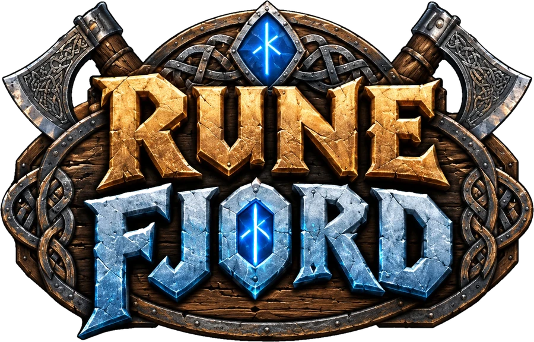
One finished game. A second world on top of it.
Runefjord is Tropic Tumble, my sticker merge game, rebuilt as a Viking game. The rules, levels, economy and code are the same. The stickers, paintings, menus, music, words and store identity are new. Pick a device and play it, then compare it with the original.
Why reskin
The expensive part is already built
A finished game is mostly decisions: how a level ramps, what a reward is worth, when an ad is welcome. A reskin keeps every one of them and changes what the player sees and hears. Runefjord went from a copy of Tropic Tumble to a signed Android build on a Google Play test track in four days.
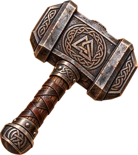
Same engine
The physics pile, three-stage merging, level curve, goals, boosters, events, stories, season pass, shop and save system were carried over unchanged, with their balance already tested.
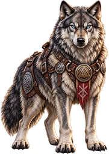
New world
76 new stickers in 14 sets, nine scene paintings, eight level backdrops, a campaign map, a wolf in place of the fox, painted menus and banners, and a Norse soundtrack.
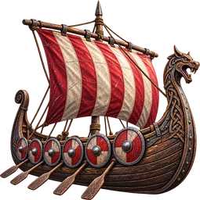
Its own product
A separate app with its own name, icon, store listing, save data, ad units, in-app products and age rating, so the two games can be run and measured independently.
A look inside
From a pile of jelly to a finished fjord
Thirty seconds of the game, then eight of its screens. Every one has a twin in Tropic Tumble with the same layout and different art.

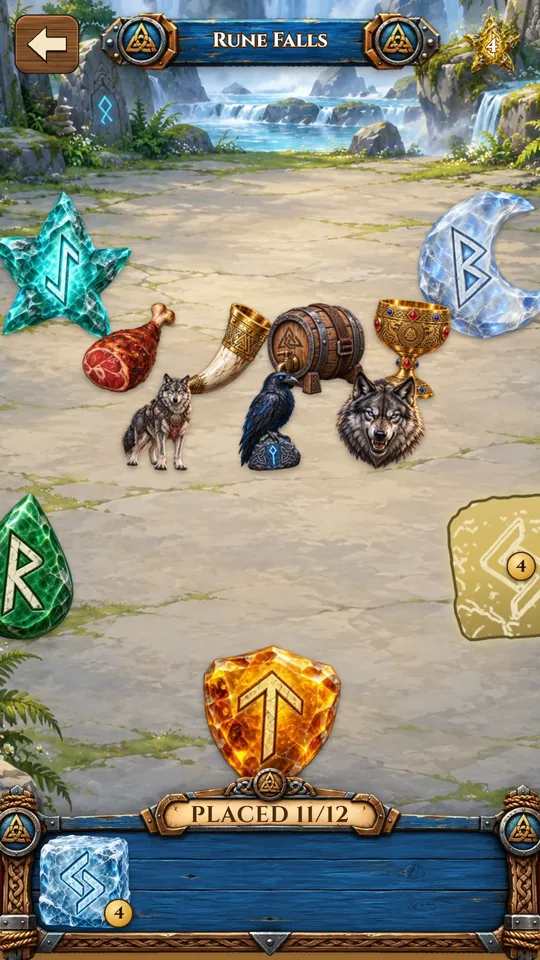


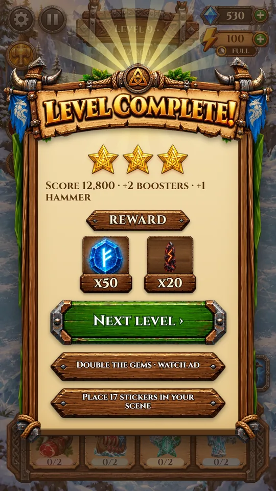
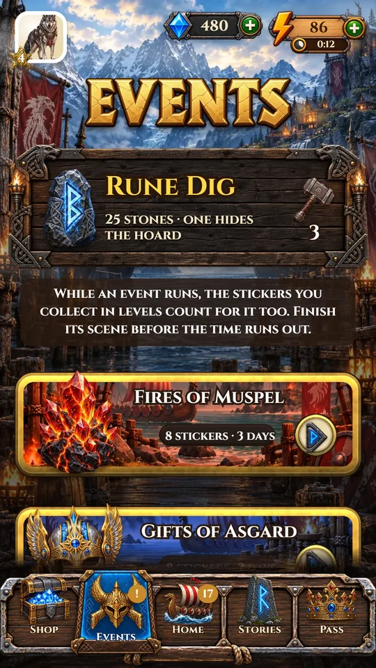

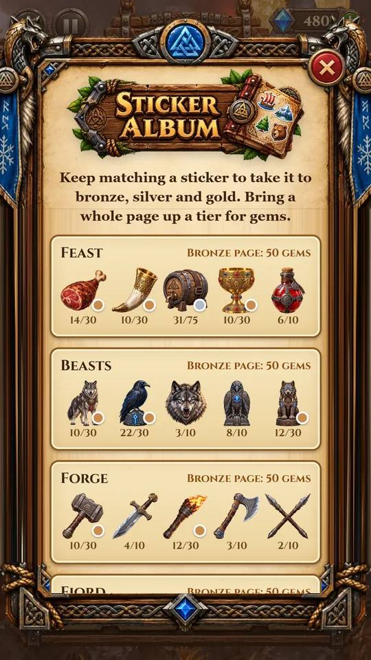
What changed, what stayed
Same game underneath
The split below is the whole job. Everything under Kept was reused as it was. Everything under New was made for Runefjord.
Kept
- The rules. A physics pile, merging in three stages, a tide of new stickers, ice blockers, and four kinds of level goal.
- The balance. Level curve, energy and gem economy, reward sizes and prices, already tuned with simulated players.
- The systems. Scenes, album, daily reward, events, stories, a 28-day season pass, the shop, rewarded ads and the guided tour.
- The plumbing. Saving, device scaling, the slow-phone mode, the Android and iPhone projects, Google Play billing and AdMob.
- The layout. Each new picture was made at the size and shape of the one it replaced, so almost no screen had to be rearranged.
New
- The art. Stickers, pack cards, scene and level paintings, the map, the logo, and painted frames for the settings, pause, shop and reward screens.
- The words. Set names, worlds, scenes, three short stories, the Saga Pass, and lettering in a carved Roman face in place of a rounded one.
- The sound. Four Norse tunes on lyre, flute and bowed strings over a drone and a frame drum, generated in the browser like the originals.
- One new feature. The Rune Dig: a daily field of stones to break with hammers earned by playing.
- The product. App name and id, icon, splash, store listing and screenshots, its own ad units and in-app products, and its own age rating.
- Testing tools. As in the original, the gear menu here can add energy, finish a level or reset the save. Try it.
Working with your team
How a reskin runs
This is the order Runefjord followed. It is built so your artists can deliver in any order and the game is playable the whole time.
Copy, rename, isolate
The game is forked into its own project with a new app id and its own save slot, and the original game's live ad and payment keys are switched off, so the copy cannot touch the first game's players or revenue.
Rename the content first
Sets, stickers, worlds and scenes get their new names in the data while the old pictures stand in under them. The game runs from the first hour, and the art list writes itself.
Art lands one picture at a time
Every picture has a fixed size and file name. Drop a new one in and the game uses it. A sheet lists what is still a stand-in, so nothing is forgotten.
Re-fit the few things that moved
A carved frame with wolf heads needs different margins from a bamboo one. Those are small layout edits, each checked on a phone-sized screen.
Ship it as its own app
A new store listing with screenshots taken from the game, its own ad units, in-app products and privacy declarations. Runefjord is on a Google Play test track now; Tropic Tumble is live.
What I can do for you
More games from the one you have
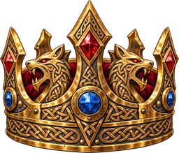
Reskins of your game
A second or third theme on a game that already works, for a new audience, season or licence.
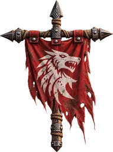
Branded versions
Your characters, products and colours on a proven loop, as its own app or inside yours.
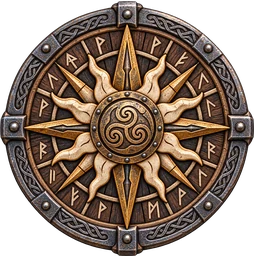
Theme tests
Two or three looks of the same game, built far enough to compare with real players before committing an art budget.
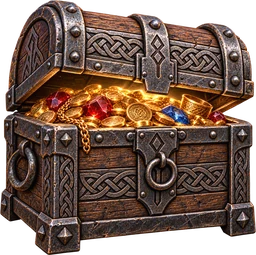
Mini games for apps
A daily game inside a shopping, loyalty or media app that gives people a reason to come back.
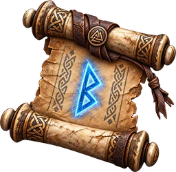
UI, UX and motion
Interface design, animation and implementation for a game your team is already making.
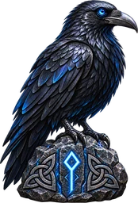
Extra hands for your team
I work alongside your designers and engineers in Unreal Engine, Unity, Godot, PlayCanvas or on the web.
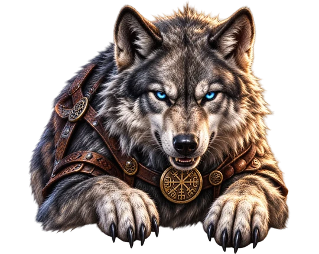
Let’s talk
Have a game that deserves a second world?
I’m Remi Couture, a product designer and tool builder with twenty years of shipped credits across games, apps and training products. Tell me what you are making and I will tell you how I would approach it.